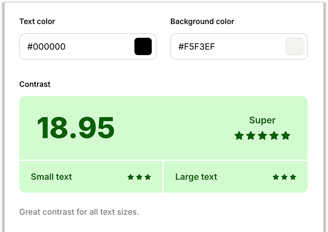

Primary Colour

Our primary colour has been used for various buttons throughout the app, both filled and outlined. Primarily used for action buttons such as going to the next page, confirming, or adding.
Secondary Colour

Our secondary colour was mainly used for our navigation bar, but you can also find it in a few buttons and pur search bars

Accessibility
Primary Colour
Importance and significance of accessibility
Secondary Colour
Importance and significance of accessibility
Text Colour - Grey
Importance and significance of accessibility

Text Colour - Black
Importance and significance of accessibility